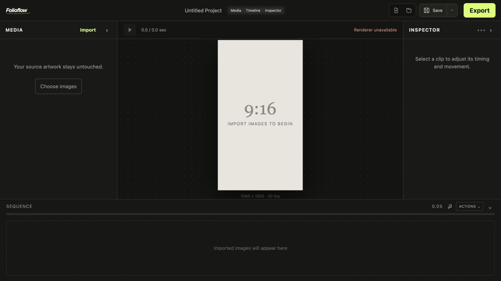

FOLIOFLOW / MACOS
Still images.
In motion.
A focused desktop editor for building polished vertical reels from artwork, motion, transitions, and music.
Download for macOS
Image-firstArrange artwork in a visual sequence.
Intentional motionControl movement, focal point, easing, and transitions.
Export-readyBuilt-in Export Engine. No terminal setup.